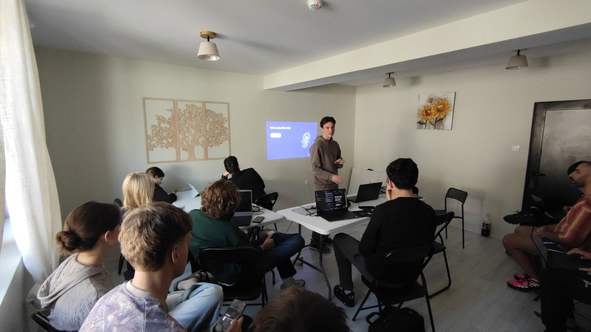
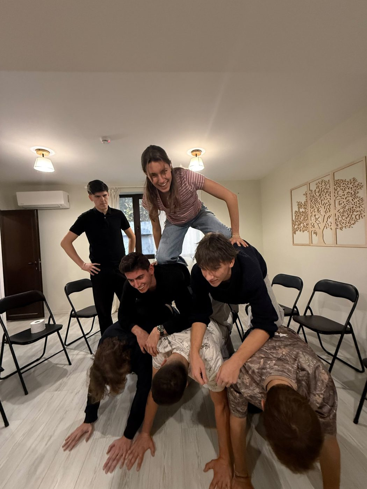
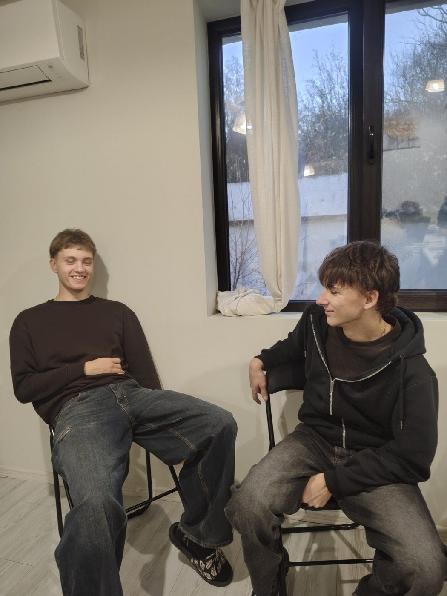

"Smart Youth Worker – AI and digital skills for youth work" was an Erasmus+ training course that brought youth workers from Bulgaria, Spain, Albania, Romania, Moldova and Lithuania to Stara Zagora to learn how to teach digital skills to young people. None of it required a tech background. Every theory input was followed straight away by something participants did, and by the end of the week every participant had built and published their own website, app or learning platform.
The course opened on 3 November with teambuilding, the project's objectives and a first look at the threat everyone has already met: online scams. In the "Spot the Scam" activity, teams raced to find four red flags hidden in a fake prize message: an unknown sender, free stuff, fake urgency and a look-alike link. The stories participants shared afterwards were the real lesson.

Day two was dedicated to AI in youth work. In the "Prompt Like a Pro" workshop, participants learned the R-T-C-F formula (Role, Task, Context, Format) and put it straight into practice in two team games. In the first, each team used AI to research and design a five-slide presentation for teenagers on keeping their Google, Facebook and Steam accounts safe, with a source for every fact. In the second, Prompt Pictionary, teams wrote and rewrote prompts until their AI image matched a secret target. The afternoon brought an AI tool map of the group and the first round of vibe coding: building software by describing it to an AI in plain language.
On day three, participants turned their first drafts into working projects and tested them on their phones. They built a city guide with missions around Stara Zagora, a volleyball learning app, a site that makes politics simple for first-time voters, a habit tracker with game-style rewards, a website for a small tiling business and creative portfolios. The evening belonged to the Albanian, Lithuanian and Bulgarian teams.


After three intense days in front of screens, day four was a cultural day without them: participants explored Bulgarian culture and the city of Stara Zagora, rested and recharged.
On day five, participants finished their projects, published them online with GitHub Pages and presented them in short pitches. The afternoon workshop on OSINT (open-source intelligence) began with participants investigating their own digital footprint: searching their names, checking data leaks, following their usernames and looking at what their photos reveal. The group then analysed famous online hacks and how they could have been prevented.
Day six turned participants into investigators. In a digital treasure hunt, teams followed a fictional developer's trail of clues across GitHub, X, Instagram, Reddit and the web archive, from hidden photo metadata to deleted files still sitting in the code history. The story behind it was a data protection case, which made GDPR feel real. Teams also gave each other feedback on their projects and improved them.
On the final day, the group learned how blockchain works in ten minutes and then became one: in the riddle chain, three teams solved riddles to "seal" each block, until a hacker changed the first block and the whole chain broke. A session on live tracking and public cameras asked where the line is between public and private.